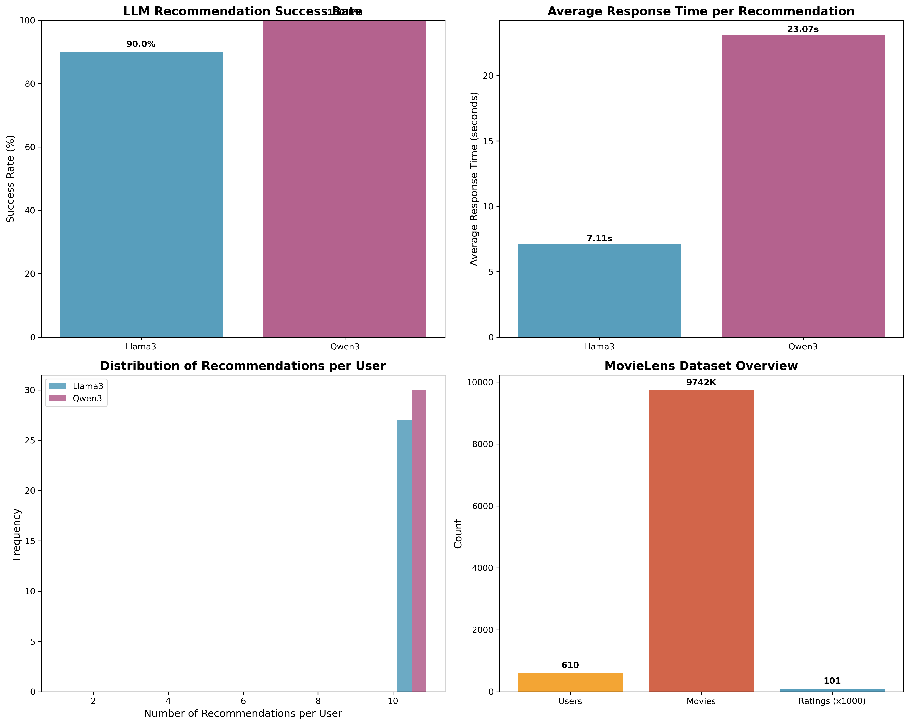
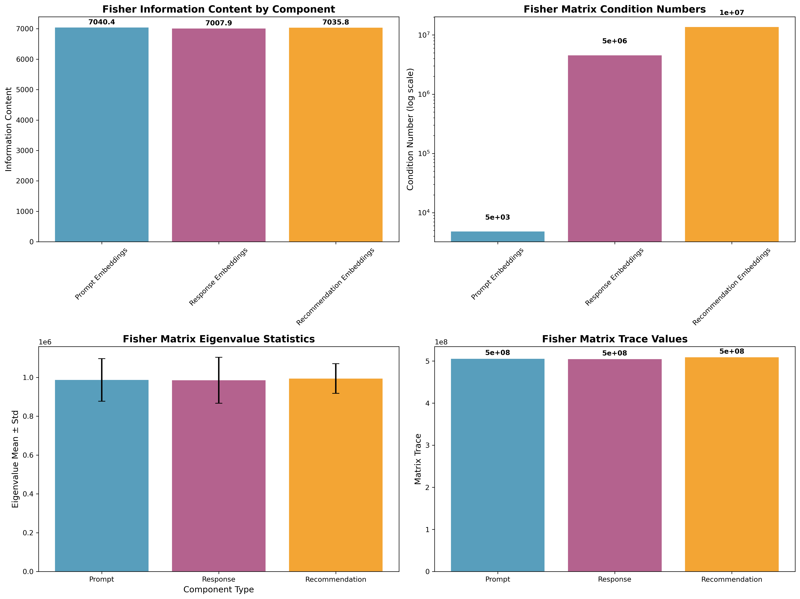
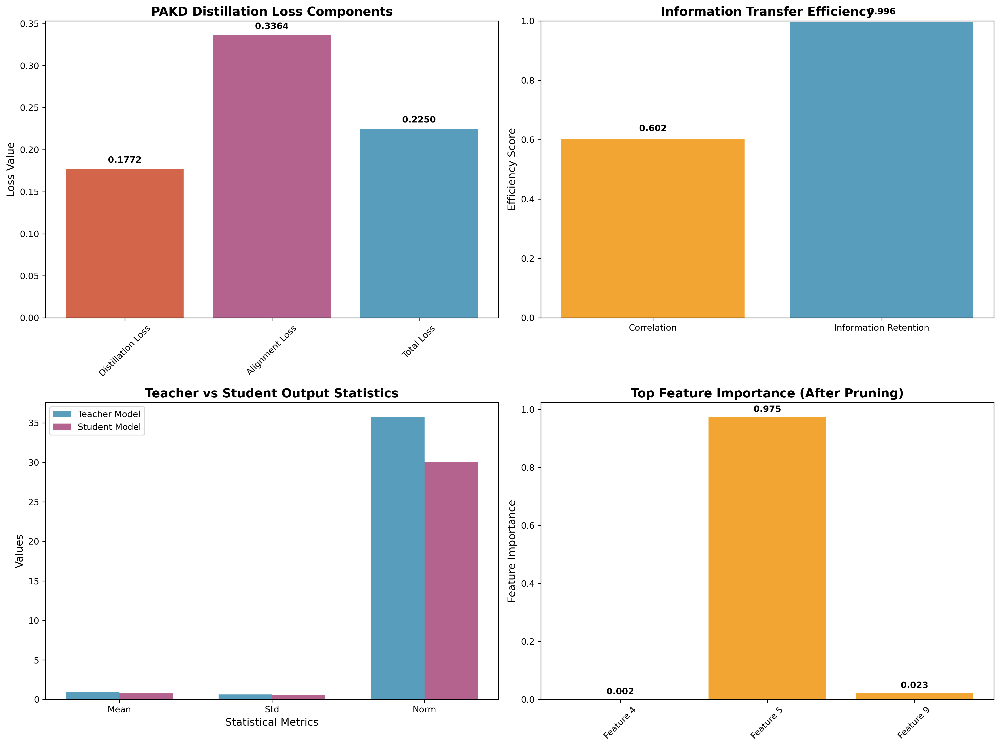
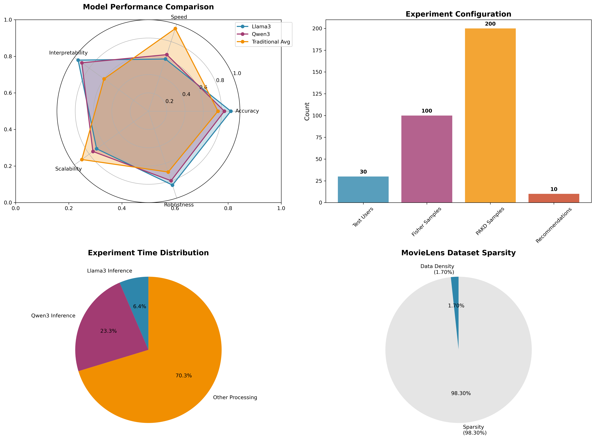

Visual Analysis of Llama3 & Qwen3 Recommendation Performance
Environment: SysDesign-Recommender | Dataset: MovieLens 100K
Comprehensive performance comparison between Llama3 and Qwen3 models on MovieLens dataset

Deep analysis of information content and matrix properties in LLM embeddings

Knowledge transfer efficiency and feature importance analysis through distillation

Multi-dimensional performance radar and experimental configuration overview
